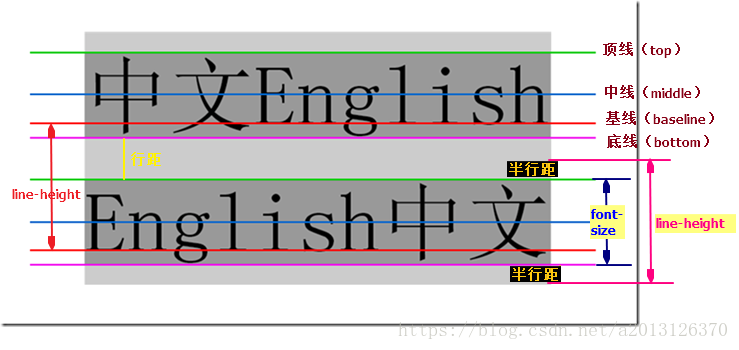
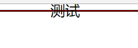
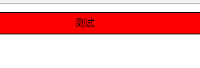
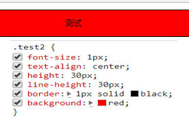
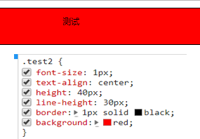
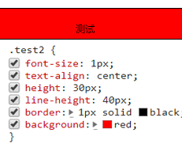

height指的是块级别元素的高度；
line-height指的是元素内容的高度。

CSS中起高度作用的应该就是height以及line-height。height是用来设置元素的高度，比如img的高度、div的高度等。
测试一
CSS:
.test1{font-size:20px; text-align:center;line-height:0; border:1px solid black; background: red;}
html:
<div class="test1">测试</div>结果：

测试二
CSS:
.test2{font-size:1px; text-align:center;line-height:20px; border:1px solid black; background:red;}
html:
<div class="test2">测试</div>结果：

结论：在没有设置div的height属性时，div的高度根据line-height的大小而变化，且文字垂直居中。
（1）height = line-height时

（2）height>line-height时

（3）height<line-height时
